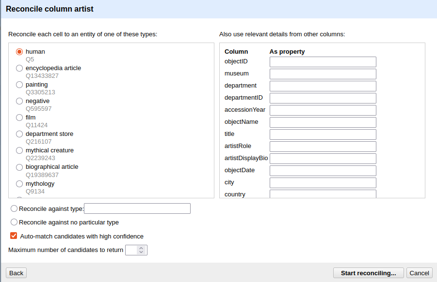

Reconciliation
Last updated on 2026-06-12 | Edit this page
Overview
Questions
- What is reconciliation and why does it matter for Linked Data?
- How do I reconcile a column against Wikidata in OpenRefine?
- How do I use reconciled values to add authority IRIs to my RDF mapping?
Objectives
- Explain what reconciliation is and why it is a key step in creating Linked Open Data.
- Reconcile the
artistcolumn against Wikidata in OpenRefine. - Review, accept, and reject candidate matches.
- Add
schema:sameAslinks to the Person entity using the reconciled Wikidata IRIs.
From Placeholders to Real Identifiers
In the previous chapter, we created a Person entity for each artist
in our dataset. The subject IRI was constructed from the artist’s name —
http://example.org/person/Surugue%2C+Louis. This works
within our dataset: the IRI is unique, consistent across rows, and
stable enough for the mapping to function.
But it is still a local placeholder. Nothing outside our dataset
knows what http://example.org/person/Surugue%2C+Louis
refers to. It cannot be connected to information about this artist in
other datasets, and a system working with Wikidata or any other
authority file has no way to recognise it as the same person.
This is the gap between a local RDF dataset and genuine Linked Open Data. To close it, we need to connect our local entities to identifiers that the wider LOD ecosystem already knows: identifiers in authority files like Wikidata, ULAN, or the GND.
The process of establishing these connections is called reconciliation.
What Is Reconciliation?
Reconciliation means matching the values in a column against the entities in an external authority file and finding the best correspondence for each value.
In practice: you take the text “Surugue, Louis” and ask Wikidata:
is there an entity in your system that matches this name?
Wikidata returns one or more candidates with confidence scores. You
review them, confirm the correct match, and the local text value is now
linked to a globally recognised IRI:
https://www.wikidata.org/wiki/Q5981497.
This is not about replacing your local data. The local placeholder IRI remains the subject of your RDF graph. What reconciliation adds is a link to the same entity in another dataset. Any system following that link can retrieve everything the other dataset, in our example Wikidata, knows about the person without you having to include it yourself.
Reconciling Against Wikidata
OpenRefine has a built-in reconciliation client that can query any reconciliation service endpoint. Wikidata provides one out of the box.
Start the reconciliation:
- Click the dropdown arrow on the
artistcolumn header in Open Refine, not the RDF-Transform window. - Select Reconcile → Start reconciling….
- In the dialog that opens, select Wikidata (en) from the list of available services and click Next.
- Under Reconcile each cell to an entity of type, type
humanand select the result human (Q5). This tells Wikidata that you are looking for people, which narrows the search and improves match quality. - Click Start reconciling.
OpenRefine will now query Wikidata for every unique value in the
artist column. Depending on the number of distinct values
and network speed, this may take a moment.

Reviewing Matches
In some cases, Open Refine will be certain that it has selected the correct entity, while in others it will not. In cases where it is certain, the name is displayed directly in blue as a link that takes you to the entry in Wikidata. In other cases, various entities are displayed from which you must choose. In our case, for example, in row 8. There, OpenRefine is unsure, and we must explicitly confirm once again whether the entity found is the correct one. If we look at the Wikidata entry, we can see that the person listed there was active in Modena, a city that is also found in our data. That is enough for us to be certain in this case. Now we can click the single tick (✓) to confirm the entity or the double tick (✓✓) to perform this action for all fields associated with this entity. In row 10, with Rudolph Ackermann, it gets more difficult. There, we have two people to choose from, and since we have little other information in our dataset, it is difficult to be certain which entity is the correct one. If no candidate is correct, you can leave the cell unmatched, search for a match by hand or even create a new Entity in wikidata.
Not every match will succeed
For well-known artists — Rembrandt, Dürer, Hokusai — Wikidata will typically return a confident single match. For lesser-known, historical, or ambiguously named artists, the match may be uncertain or absent. This is expected. Reconciliation improves data quality where it can; it does not require perfection to be useful. Even a partial reconciliation, covering 60 % of artists, significantly increases the connectedness of the dataset. However, reconciliation always requires expertise and domain knowledge. In our example, it is already clear that some decisions cannot be made without further research.
As mentioned earlier, we have only created a link within Open Refine so far. If we want to supplement the underlying data with the new information, we need to add a new column containing that information:
- Click the droptdown arrow in the
artistcolumn again - Reconcile -> Add column with URLs of matched entities
- Enter artistSameAs as column name
Now you can see a new column in your data linking the artist to the corresponding Wikidata entity.
Applying Reconciled IRIs in RDF-Transform
Confirming a match in OpenRefine does not automatically change the
exported RDF, we still need to tell RDF-Transform to use the reconciled
Wikidata IRI. We do this by adding a schema:sameAs property
to the Person root node.
- Open the RDF-Transform panel (RDF Transform → Edit RDF Transform…).
- Find the Person root node.
- Add a new property:
schema:sameAs. - Add a new object to this property.
- Set the Content to our new artistSameAs column
- Sett **Content used… to IRI.
RDF-Transform will now read the reconciled Wikidata IRI for each cell
and write it as the value of schema:sameAs. Cells that were
not reconciled will produce no triple for this property.
Switch to the Preview tab to check the result. A successfully reconciled artist should now appear like this:
<example.de/Surugue,Louis>
rdf:type schema:Person;
rdfs:label "Surugue, Louis";
schema:description "French, Paris ca. 1686–1762 Grand Vaux";
schema:sameAs <https://www.wikidata.org/wiki/Q5981497> .The local IRI remains the subject. The schema:sameAs
link connects it to the Wikidata entity. Both are now part of the
triple, and any system following the schema:sameAs link can
retrieve the full Wikidata record for this person.